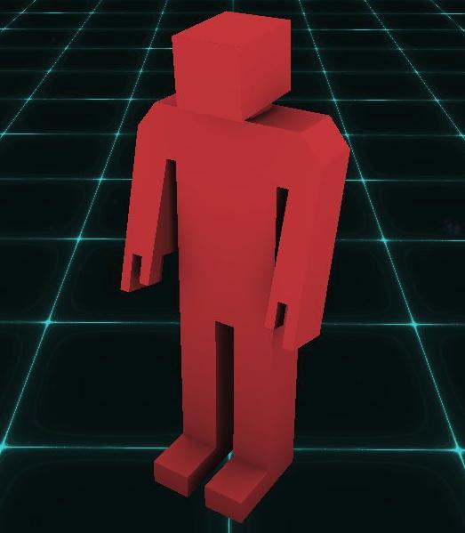

Janus VR Guide Janus VR Markup language Janus VR FAQs JavaScript API(Janus)
Janus VR markup language
1. Introduction
FireBox can read the content of ordinary HTML webpages, and arrange the content in particular patterns on pre-defined geometry. However, for those looking to create more interesting rooms with rich 3D content, a "FireBoxRoom" can be constructed by adding extra tags to existing an HTML file. Those already familiar with basic HTML should be able to wrap their head around how to make a FireBoxRoom fairly easily. It is my intention that creating a FireBoxRoom should be easy to pick up and learn.
2. The FireBoxRoom
FireBoxRooms are defined by embedding an HTML-like language (technically XML) within an existing HTML file. A barebones HTML file has the following structure, with a head and a body:
<html> <head> </head> <body> </body> </html>
The head is important for two reasons. The first is because it's used as the title for the FireBoxRoom. So we create a title for our FireBoxRoom (which also serves as the page's title) by doing the following using standard HTML:
<html> <head> <title>Example title</title> <meta http-equiv="refresh" content="0; url=http://janusvr.com/index2.html" /> </head> <body> </body> </html>The second purpose of the head tag is that you can add within it a "meta" tag to cause JanusVR's built in 2D browser to display a particular alternate webpage, which will be shown when pressing escape from within JanusVR (in the above example, pressing escape in JanusVR will reveal an interactive 2D webpage set to the URL http://janusvr.com/index2.html ).
Note that specifying the title and the redirect page are both optional.
A FireBoxRoom is created within an existing HTML page by placing the FireBoxRoom tag within the body tag, as in the following example:
<html> <head> <title>Example title</title> </head> <body> <FireBoxRoom> </FireBoxRoom> </body> </html>Elements within a FireBoxRoom may appear as text within the page. To suppress this, the FireBoxRoom tags can be encapsulated using standard HTML comment tags. The FireBox application will still detect the FireBoxRoom, but other existing browsers will ignore the content. Here is an example:
<html> <head> <title>Example title</title> </head> <body> <!-- <FireBoxRoom> </FireBoxRoom> --> </body> </html>Congratulations - you have created a FireBoxRoom! The remainder of this document defines the content which is placed within the FireBoxRoom tags, in order to create the 3D content for your room. The remainder of the document discusses linking all Assets to your FireBoxRoom (content such as images, 3D geometry, JS scripts, or sounds), followed by how to create Room contents, which involves creating instances of the defined assets and spatially arranging them within the room.
3. Assets
To create an ordinary webpage, the designer first creates and collects the materials which will appear in the page - content such as text and images. Creating a FireBoxRoom is similar - URLs need to be specified which inform FireBox where different forms of content can be found. However, for a FireBoxRoom all assets (external page contents like images, etc., referred to by a URL) are defined in advance of their placement within the room. The reason is that by first creating a "collection" of items, one can then interactively choose amongst them when placing instances ("copies") of them in the room.
All assets are defined within the Assets tag, which appears within a FireBoxRoom tag, like the following:
<html> <head> <title>Example title</title> </head> <body> <FireBoxRoom> <Assets> </Assets> </FireBoxRoom> </body> </html>
Almost all assets must have an id defined, which is short for "identifier". The id is unique and used to refer to a particular asset (no two assets should possess the same id). id's are case insensitive, therefore as an example "test_id" and "TEST_id" are considered the same.
All assets also must have a src defined, which is short for "source". As with standard HTML, the src attribute is set to the URL where the content can be accessed.
3.1 AssetImage
These are images which are used in the room. Formats like PNG, JPG and GIF are supported - and likely many others too. Images with a transparency layer (such as with the PNG format) are supported. Here is the complete list of attributes:
id - id of the AssetImage
src - location of the image file
sbs3d (default "false") - when set to true, the image is treated as a SBS (side-by-side) formatted image. By default, the left eye will see the content on the left and the right eye the content on the right. Set the reverse3d attribute to true if you want to flip which side goes to each eye.
ou3d (default "false") - when set to true, the image is treated as an UO (under-over) format video. By default, the left eye will see the content on the top and the right eye the content on the bottom. Set the reverse3d attribute to true if you want to flip which side goes to each eye.
reverse3d (default "false") - flips which half of the image is shown to each eye, when either sbs3d or ou3d are set to true.
tex_clamp (default "false") - whether to perform texture clamping (GL_CLAMP_TO_EDGE), or allow textures to repeat (GL_REPEAT)
tex_linear (default "true") - if true, textures have bilinear filtering applied (GL_LINEAR). If false, a nearest sampling method (GL_NEAREST) is used which gives textures a pixellated look
tex_compress (default "false") - if true, uses hardware-supported texture compression on the image texture (GL_COMPRESSED_RGBA).
Here is an example of how to use the AssetImage tag to add an image to the collection of assets:
<AssetImage id="woodplanks_img" src="WoodPlanks.jpg" />This creates a new AssetImage for the FireBoxRoom with id "woodplanks_img". The URL to the image was specified as a relative URL, so we expect to find "WoodPlanks.jpg" in the same directory that the FireBoxRoom HTML file itself is located. Note that absolute URLs are also supported.
3.2 AssetSound
These are sounds which can be used within the FireBoxRoom. Here is the complete list of attributes:
id - id of the AssetSound
src - location of the sound file
Supported formats are dependent upon the multimedia capabilities of the underlying platform (e.g. DirectShow on Windows, gstreamer on Linux). Uncompressed WAV will work universally, but is not bandwidth friendly. MP2 or MP3 are compressed formats which seem to work universally and offer great compression. The OGG format, while also great, does not seem to be supported on a default Windows installation, so I would discourage its use (unless you don't care about those Windows users not capable of OGG format playback).
Here is an example of how to use the AssetSound tag to add the sound "localmap.mp3" to the collection of assets, assigning it id "localmap_sound":
<AssetSound id="localmap_sound" src="localmap.mp3" />
3.3 AssetVideo
These are videos which can be used within the FireBoxRoom. Here is the complete list of attributes:
id - id of the AssetVideo
src - location of the video file
loop (default "false") - normally the video plays only one time, but when this attribute is set to true, the video will play indefinitely until the player leaves the room
auto_play (default "false") - when set to true, video will play immediately when the room is entered. If set to false (the default), the user must click on the Video (or any Object!) to play it.
tex_compress (default "false") - if true, uses hardware-supported texture compression on the video texture (GL_COMPRESSED_RGBA).
sbs3d (default "false") - when set to true, video is treated as an SBS (side-by-side) format video. By default, the left eye will see the content on the left and the right eye the content on the right in each frame of video. Set reverse3d to true if you want to flip this.
ou3d (default "false") - when set to true, video is treated as an UO (under-over) format video. By default, the left eye will see the content on the top and the right eye the content on the bottom in each frame of video. Set reverse3d to true if you want to flip this.
reverse3d (default "false") - flips which half of each frame is shown to each eye, when either sbs3d or ou3d are set to true.
Supported formats are dependent upon the multimedia capabilities of the underlying platform (e.g. DirectShow on Windows, gstreamer on Linux). (On Windows, I used the K-Lite Codec Pack (Basic) to make a much wider variety of video formats available.)
Here is an example of how to use the AssetVideo tag to add the video "las_firebox_clip.mp4" to the collection of assets, assigning it id "vid_id":
<AssetVideo id="vid_id" src="las_firebox_clip.mp4" />
3.4 AssetObject
These are the 3D geometric objects which can be used within the FireBoxRoom. Presently, Wavefront OBJ is the only supported format. Here is the complete list of attributes:
id - id of the AssetObject
src - location of the OBJ file
tex0 (default "") - location of a texture image (not using a material file)
tex1 (default "") - location of a texture image (not using a material file)
tex2 (default "") - location of a texture image (not using a material file)
tex3 (default "") - location of a texture image (not using a material file)
mtl (default "") - location of the material file (not using texture images)
tex_clamp (default "false") - whether to perform texture clamping (GL_CLAMP_TO_EDGE), or allow textures to repeat (GL_REPEAT)
tex_linear (default "true") - if true, textures have bilinear filtering applied (GL_LINEAR). If false, a nearest sampling method (GL_NEAREST) is used which gives textures a pixellated look
tex_compress (default "false") - if true, uses hardware-supported texture compression on textures (GL_COMPRESSED_RGBA).
tex_mipmap (default "true") - if true, uses mipmapping for textures.
The URL to the OBJ file is specified by the src attribute. You can also specify materials for the OBJ file using either a single texture file (specified with the tex attribute), or more traditionally by specifying the location of the material file (specified with the mtl attribute). Here is an example of the first method (specifying a single image as a texture):
<AssetObject id="pinetree" src="pinetree.obj" tex="pinetree.png" />Here is how to specify a material file (which may reference many textures):
<AssetObject id="pinetree" src="pinetree.obj" mtl="pinetree.mtl" />
Note above that since both src, tex and mtl were specified as relative URLs, the files are expected to be located in the same directory as the HTML file itself. Texture formats such as JPG, PNG and GIF have been tested, it is likely that many other formats will also work. Also, note that images with a transparency or "alpha channel" are supported as textures.
Details for the more technical reader: If per-vertex normals are not specified in the file (specified by "vn" lines in the file), normals which are per-face will be generated by FireBox and assigned to each vertex. If textures are to be used, texture coordinates should be exported (these are "vt" lines in the file). Finally, meshes with 4 or more vertices used to define a polygonal face are supported - however FireBox's treatment is to divide these polygons into triangles using a naive triangle fan method, therefore only convex polygonal faces are properly supported and will render correctly.
3.5 AssetShader
An AssetShader allows you to use either a GLSL fragment shader to shade geometry (set src), or a GLSL vertex shader to deform geometry (set vertex_src), or both. Attributes to set are the following:
id - id of the AssetShader
src - (default "") location of a GLSL fragment shader (plaintext file with GLSL code)
vertex_src - (default "") location of a GLSL vertex shader (plaintext file with GLSL code)
Here is an example (just a fragment shader):
<AssetShader id="shader_id" src="shader1.txt" />Here is another example (both custom fragment and vertex shaders):
<AssetShader id="shader_id" src="frag.txt" vertex_src="vert.txt" />
See the section on Objects for information on shading an Object using the AssetShader (essentially, you want to set an Object's shader_id to the AssetShader's id). Here are some GLSL uniform and varying variables which Janus sets for the fragment shader:
uniform mat4 iModelMatrix;
uniform mat4 iNormalMatrix; //Note: this is transpose(inverse(iModelMatrix))
uniform mat4 iViewMatrix;
uniform mat4 iViewMatrixInverse;
uniform int iLeftEye; //rendering left eye (0 - no, 1 - yes)?
uniform float iGlobalTime; //number of seconds that passed since shader was compiled
uniform int iUseTexture0; //use texture0 (0 - no, 1 - yes)?
uniform int iUseTexture1; //use texture1 (0 - no, 1 - yes)?
uniform int iUseTexture2; //use texture2 (0 - no, 1 - yes)?
uniform int iUseTexture3; //use texture3 (0 - no, 1 - yes)?
uniform sampler2D iTexture0; //samples from a texture defined on an object using the tex0 attribute
uniform sampler2D iTexture1; //samples from a texture defined on an object using the tex1 attribute
uniform sampler2D iTexture2; //samples from a texture defined on an object using the tex2 attribute
uniform sampler2D iTexture3; //samples from a texture defined on an object using the tex3 attribute
uniform int iIllum; //defines an intended per-material illumination model to use
uniform int iUseClipPlane; //use clip plane (0 - no, 1 - yes)? (i.e. is the room viewed through a portal)
uniform vec4 iClipPlane; //equation of clip plane (xyz are normal, w is the offset, room is on side facing normal)
uniform vec3 iPlayerPosition; //the player's position in the room
varying vec3 iPosition; //interpolated vertex position (note: not multiplied with modelview matrix)
varying vec3 iPositionWorld; //(iModelMatrix * gl_Vertex).xyz;
varying vec3 iPositionCamera; //(gl_ModelViewMatrix * gl_Vertex).xyz;
varying vec3 iNormal; //interpolated normal
varying vec3 iNormalWorld; //(iNormalMatrix * vec4(gl_Normal, 0.0)).xyz;
varying vec3 iNormalCamera; //gl_NormalMatrix * gl_Normal;
gl_TexCoord[0].st //the UV texture coordinate on the geometry to be shaded
//in your own AssetShader, add the following test at the start of main() to avoid portal-related artifacts (being able to see stuff behind the portal):
if (iUseClipPlane == 1 && dot(iPositionWorld, iClipPlane.xyz) < iClipPlane.w) {
discard;
}
Here is a very simple example shader which uses one of these GLSL variables to shade the surface based on normal direction (looks cooler when the surface has a smoothly varying normal, e.g. a surface with some non-zero curvature such as a sphere):
void main(void) {
vec3 normCol = (iNormal + vec3(1,1,1)) * 0.5;
gl_FragColor = vec4(normCol, 1.0);
}
3.6 AssetGhost
An AssetGhost defines a recording of a user. This recording will contain the position and orientation of the avatar, as well as the orientation of their head (as measured from the Oculus Rift headset). To create a recording within Janus, press Ctrl+G to start the recording, and once finished press Ctrl+G again. A file "ghost.txt" will be written out to the workspace directory. The location of this file should be set to the src attribute of the AssetGhost (but feel free to rename it to whatever you wish, it need not be named ghost.txt).
id - id of the AssetGhost
src - location of the ghost recording file (a plaintext file)
Here is an example:
<AssetGhost id="ghost_id" src="ghost.txt" />
3.7 AssetWebSurface
An AssetWebSurface defines an interactive surface that provides a 2D web view. Note that this surface can be placed on an Object by specifying a websurface_id that matches the AssetWebSurface's id.
id - id of the AssetWebSurface (note that the corresponding Object should have its "websurface_id" attribute set to this value)
src - website to use for the AssetWebsurface
width - texture width for rendering the AssetWebSurface
height - texture height for rendering the AssetWebSurface
Here is an example:
<AssetWebSurface id="google" src="https://www.google.com" width="1920" height="1080" /> ... <Object id="plane" websurface_id="google" />
3.8 AssetScript
An AssetScript defines a file containing JavaScript (technically ECMAScript 3 compliant code) that you can run in the FireBoxRoom. Functions can be set up for specific events such as mouse clicks or on frame updates. Sounds can be played, Objects can be created, have their properties modified, and be destroyed. For further details about this, see this page: js.html. Also check the "experiment" workspace included with JanusVR which serves as a JS example.
src - path to a file containing JavaScript for the FireBoxRoom
Example usage (where the JS is contained in a file called "script.txt"):
<AssetScript src="script.txt" />
(Note: As of the 35.0 release, multiple AssetScripts can be used within a single Room.)
(More notes: Cookies can also be saved/loaded via the JS (in addition to those cookies set through AssetWebSurfaces). This can be used for inter-communication between the FireBoxRoom, the JS/AssetScripts, and AssetWebSurfaces in the room.)
4. Room
With our "collection" of assets defined, we are now ready to build our FireBoxRoom! This process involves the placement of instances (or "copies") of the assets we defined in the previous section into our 3D environment.
All Room content is defined within the Room tag, which appears within the FireBoxRoom open and close tags, and below the Assets tag, like the following example:
<html> <head> <title>Example title</title> </head> <body> <FireBoxRoom> <Assets> <AssetImage id="woodplanks_img" src="WoodPlanks.jpg"></AssetImage> <AssetSound id="localmap_sound" src="localmap.mp3" /> <AssetObject id="pinetree" src="pinetree.obj" tex="pinetree.png" /> </Assets> <Room> </Room> </FireBoxRoom> </body> </html>Presently, only one Room is supported within a FireBoxRoom. (Aside: This may change in the future -- potentially, a FireBoxRoom could contain one or more inter-connected Rooms which share the same collection of assets. Such an approach will not require the generation of multiple HTML pages, or having to re-download assets which are common between HTML pages.)
Before delving into adding all the instances of the assets, we first detail the attributes of the Room itself.
4.1 Skybox
By default, a "sky" for the Room will be randomly selected amongst a small set which are packaged with FireBox. Optionally, one can define a custom skybox for the Room. The remainder of this subsection discusses how to do this.
In more detail, a "skybox" is a textured cube, used to represent anything in the environment appearing infinitely distant (think of a very large cube which surrounds the player, which appears not to move when the player does). The textures (or images) for faces of this cube are defined by AssetImages, which were presented in the previous section. Here is an example:
<AssetImage id="sky_left" src="Sky0_c.jpg" /> <AssetImage id="sky_right" src="Sky1_c.jpg" /> <AssetImage id="sky_front" src="Sky2_c.jpg" /> <AssetImage id="sky_back" src="Sky3_c.jpg" /> <AssetImage id="sky_up" src="Sky4_c.jpg" /> <AssetImage id="sky_down" src="Sky5_c.jpg" />You are not required to define all 6 images (e.g. you may choose to leave out the "down" image). However, images should be oriented according to the following pattern so they line up correctly at the edges (look at the face labelled "FRONT" and picture the cube containing, and then unwrapping around you):
To use the defined AssetImages to define the skybox for the Room, we define any or all of the following six attributes: skybox_up_id, skybox_down_id, skybox_left_id, skybox_right_id, skybox_front_id, skybox_back_id. Here is an example:
<Room skybox_left_id="sky_left" skybox_right_id="sky_right" skybox_front_id="sky_front" skybox_back_id="sky_back" skybox_up_id="sky_up" skybox_down_id="sky_down"> </Room>Note in particular that each attribute is set to the id of the corresponding AssetImage, not the image filename. Also note that if none of the skybox attributes are set, then the Room will be created with a random skybox packaged with FireBox as mentioned previously.
4.2 Room Template
To allow new users to get started with creating a room quickly, FireBox comes packaged with a collection of room "templates", which are geometry that can be used to define the structure and boundary for a Room. When viewing HTML content in FireBox which does not contain a FireBoxRoom tag, rooms are created using these templates.
There are two broad approaches to room creation: (i) Use one of the templates available. (ii) Do not use any room template, instead using AssetObjects to define the geometry and boundary for your room (discussed later). In this subsection, we consider the first approach.
The following table shows the id's and a visualization of each of the templates available with FireBox at present:

To use any of these room templates, set the use_local_asset attribute for the Room to the template's name. For, example, to use room template with id "room1", do the following:
<Room use_local_asset="room1"> </Room>Note that if the use_local_asset attribute is not set, the Room will be completely empty (and have no geometry or boundaries).
The colour of the room template can be selected. The colour is specified using 3 values which range between 0 and 1 for each of the red, green and blue components. For example, the colour of a "very blue" room could be expressed as "0 0 1". To set the room template colour for a room, set the col attribute for the Room, like the following example:
<Room use_local_asset="room1" col="0 0 1"> </Room>
The room template can be made visible or invisible by setting the visible attribute, like the following:
<Room use_local_asset="room_plane" visible="false"> </Room>This example uses the room_plane template, the geometry will be there for collision, and you will be able to use the cursor and menu on it, but it will not be visible. The default value for visible is "true".
4.3 Entrance Portal
Positions and directions can be defined in a 3D space by specifying components for X Y and Z. For instance, the position where X=2, Y=3, and Z=4 can be expressed concisely as "2 3 4". Directions (vectors) can also be specified the same way.
By default, the entrance for the player into the environment will be at 3D position "0 0 0", and the player will be facing direction "0 0 -1" (along the negative Z-axis). These values can be overridden by setting the pos (position) and fwd (forward direction) attributes for the Room. Here is an example:
<Room use_local_asset="room1" col="0 0 1" pos="5 0 5" fwd="1 0 0"> </Room>In the above example, when the player walks through a portal to reach the Room, the entrance portal for the Room will be at position "5 0 5", and the portal will be facing "1 0 0" (along the positive X-axis). To reiterate, if the pos or fwd attributes are unspecified, the defaults of "0 0 0" and "0 0 -1" are used, which are fine for the majority of the template rooms, such as "room1" used in the example above.
Note that since version 19 a non-vertical orientation for the room entrance portal can be specified by using the xdir, ydir, zdir attributes (defaults "1 0 0", "0 1 0", "0 0 -1") instead of the fwd attribute.
4.4 Near and Far Plane Distances
The default near and far plane distances for a Room are 0.0025 and 500.0 (this corresponds to 2.5mm and 500m in terms of physical units). These default values can be overridden by setting the near_dist and far_dist attributes for a room, like the following example:
<Room use_local_asset="room_plane" pos="0 0 0" fwd="0 0 -1" near_dist="0.01" far_dist="1000.0"> ... </Room>Note that setting the near plane distance to an excessively large value may cause visual artifacts when passing through a portal (the surface the portal is drawn upon becomes "too close" -- clipped by the frustum's near plane). Choosing inappropriate near and far plane distances may result in excessive/frequent Z-fighting of the Room's geometry.
4.5 Default Sounds
By default, Rooms have an ambient "wind noise" in the background, and you will hear a voice when doing many things. All of these default sounds can be muted when in the Room by setting the default_sounds attribute of the Room to false (the default is "true"). This is useful e.g. for a theater room. Here is an example:
<Room use_local_asset="room_plane" pos="0 0 0" fwd="0 0 -1" default_sounds="false"> ... </Room>
4.6 Gravity, Jump Velocity, Walk and Run Speeds
Rooms by default have gravity which is the same as Earth (an acceleration on all objects of 9.8 metres per second squared, downward).
Additionally, a jump_velocity defines the speed at which the player starts moving upward when jumping (and ultimately defines, in combination with gravity, how high the player can jump). The default jump_velocity is 5.0 metres per second upward. These defaults can be changed, for instance to have moon-like gravity, or increase the maximum height when jumping.
The walk_speed and run_speed attributes (defaults 1.8 and 5.4 metres per second) define the speed of the player as they navigate the room.
Here is an example of how to change all of these attributes for the Room:
<Room gravity="-3.0" jump_velocity="10.0" walk_speed="5.0" run_speed="10.0" use_local_asset="room_plane" pos="0 0 0" fwd="0 0 -1" default_sounds="false"> ... </Room>
4.7 Cursor Visibility
Rooms by default allow one to see their 3D cursor while in the room. This is controlled by a Room attribute called cursor_visible which is set to "true" by default. One may wish to hide the 3D cursor for their room, to do so set the cursor_visible attribute of the room to "false". Here is an example:
<Room use_local_asset="room_plane" cursor_visible="false" pos="0 0 0" fwd="0 0 -1"> ... </Room>
4.8 Fog
Fog can be used to enhance the feeling of depth or scale within a room. There are numerous fog functions which can be used, which closely follow the OpenGL specification. The following fog-related settings exist for a Room:
fog - (default "false") when "true", use the fog effect
fog_mode - (default "exp") defines the weight function to use, choices are: exp, exp2, linear
fog_density - (default "1.0") coefficient which applies to the "exp" and "exp2" fog_mode
fog_start - (default "0.0") coefficient which applies to the "linear" fog_mode (the distance at which "fog begins")
fog_end - (default "1.0") coefficient which applies to the "linear" fog_mode (the distance at which "fog ends/is maximal")
fog_col - (default "0 0 0") set the colour of the fog
Here is an example:
<Room use_local_asset="room_home" fog="true" fog_mode="exp" fog_density="0.1" fog_color="0 0 0.2"> ... </Room>
4.9 Teleport Distance
Users can teleport in Janus by holding the left mouse button and releasing where they would like to go. The maximum (and minimum distances) for the teleport functionality can be set for each room. The two attributes to set are:
teleport_min_dist - (default "5.0") The minimum cursor distance needed to allow teleporting, units in metres
teleport_max_dist - (default "100.0") The maximum cursor distance needed to allow teleporting, units in metres
Here is an example:
<Room use_local_asset="room_home" teleport_min_dist="10.0" teleport_max_dist="1000.0" > ... </Room>
4.10 Global Shader
An AssetShader (which encapsulates both a vertex and fragment shader) can be applied globally to all of the contents in a Room. To do this, declare an AssetShader in the asset list, and then set the Room's shader_id attribute to the id attribute of the AssetShader. Note that the shader applies not only to objects in the room, but to other player's avatars, and portals (whether existing in the Room or user-generated). Also note that the global shader can be overridden on a per-Object basis by setting the shader_id attribute for each Object.
shader_id - (default "") Set to the id of an AssetShader
Here is an example:
... <AssetShader id="room_shader" vertex_src="room_vertex.txt" src="room_frag.txt" /> ... <Room shader_id="room_shader"> ...
4.11 Multiplayer Server
(Release 38.0+) Janus VR allows the use of custom multiplayer servers for any room. The Janus VR client will create a new connection to the specified multiplayer server if a connection does not exist, and in addition subscribe to the URL on that server (to listen to and broadcast user events which happen in the room). The custom multiplayer server is specified by adding server and port for the Room.
server - (default "babylon.vrsites.com") Set to the domain name or IP of the custom multiplayer server for the room
port - (default "5566") Set to the port of the custom multiplayer server for the room
Here is an example which uses spyd.junkonet.org:5567 as the multiplayer server for the Room:
<Room server="spyd.junkonet.org" port="5567" ...
5. Room Contents
We now specify how to use the assets defined previously to add contents to the room (the fun part). There are presently 8 tags which add different types of content the room:
- Text
- Paragraph
- Link
- Image
- Image3D
- Sound
- Video
- Object
In the following subsections, we cover each of these in greater detail. The first three, Text, Paragraph and Link, do not rely on any assets being defined. The remainder all depend on a specific type of asset and thus require an id attribute to be defined.
Some further notes before continuing:
The orientation for most contents can be set using either by a forward direction vector (the fwd attribute), or, as FireBox does internally, by a collection of 3 vectors which define a "coordinate frame" - these are directions for the content that specify horizontal (xdir), vertical (ydir) and forward (zdir, or depth) directions. The 3 xdir, ydir and zdir vectors should be orthogonal, normalized, and define a left-handed coordinate frame. Here is an example using either method:
<Text pos="5 5 5" fwd="0 0 -1">example text</Text>
<Text pos="5 5 5" xdir="-1 0 0" ydir="0 1 0" zdir="0 0 -1">example text</Text>The two above examples produce the same result. When specifying the fwd attribute to define orientation, the vertical direction is always "up" (along the positive Y-axis). Therefore, the fwd attribute should always be a vector with zero for the Y component (e.g., do not do "0 1 0").
In the following, attributes with a "default" value do not need to be set. Those without a "default" value (such as id's) must be set.
Also note that as of Release 34.0, tags which define room contents can be "nested" (or "grouped"), which should be intuitive to those who have experience with HTML or XML. This is achieved by using nested tags as in the following example:
<Object id="clock_body" pos="0 18 0" col="1 1 0" scale="2 2 2" rotate_axis="0 1 0" rotate_deg_per_sec="10">
<Object id="clock_body" pos="5 0 0" scale=".5 .5 .5" col="1 0 0" rotate_axis="0 1 0" rotate_deg_per_sec="-20">
<Object id="clock_body" pos="4 0 0" col="0 1 0" scale=".5 .5 .5" rotate_axis="0 1 0" rotate_deg_per_sec="80">
<Object id="clock_body" pos="4 0 0" col="0 0 1" scale=".5 .5 .5" rotate_axis="0 1 0" rotate_deg_per_sec="-160" />
</Object>
</Object>
<Object id="clock_body" pos="-5 0 0" scale=".5 .5 .5" col="1 0 0" rotate_axis="0 1 0" rotate_deg_per_sec="-20">
<Object id="clock_body" pos="4 0 0" col="0 1 0" scale=".5 .5 .5" rotate_axis="0 1 0" rotate_deg_per_sec="80">
<Object id="clock_body" pos="4 0 0" col="0 0 1" scale=".5 .5 .5" rotate_axis="0 1 0" rotate_deg_per_sec="-160" />
</Object>
</Object>
</Object>
In the above example, Objects which are nested within a parent tag inherit the spatial transform of the parent, and then apply their own transformations. This arrangement, which structures the room contents as a tree, defines the sequence of transformations for any given content. This makes it possible, for instance, to have a Room containing an Object which rotates around a parent object, which rotates around a parent object, which is to the left of and rotates around a parent object, and so on.
5.1 Text
The Text tag allows the addition of 3D text to the room. The following attributes can be set for Text:
pos (default "0 0 0") - specify the position (anchor point is centered horizontally, and at the bottom vertically)
fwd (default "0 0 -1") - specify the orientation (or use xdir, ydir, zdir, defaults "1 0 0", "0 1 0", "0 0 1")
col (default "#ffffff") - specify the text colour (the attribute can be formatted as "R G B" where 0<=R,G,B<=1, #RRGGBB where RR,GG,BB are hexadecimal values between 0 and 255, and SVG colour names e.g. "purple", "forestgreen")
scale (default "1 1 1") - scale the object along each of its x (horizontal), y (vertical) and z (forward) axes
locked (default "false") - if "true", prevents modification of attributes
lighting (default "true") - if "true", uses the default shading which includes diffuse and specular components
The text content itself is placed between the opening and closing Text tags. Here is an example which adds the text 'example text' coloured light green to the room at position "5 5 5" and facing direction "0 0 1":
<Text pos="5 5 5" fwd="0 0 1" col="0.5 0.8 0.5" scale="2 2 2" locked="false">example text</Text>
5.2 Paragraph
The Paragraph tag allows the addition a generated image which contains text, use this instead of "Text" when you want to display a large amount of text within the room (either this, or create your own image with text in it). The following attributes can be set for Paragraph:
pos (default "0 0 0") - specify the position (anchor point is centered horizontally, and at the bottom vertically)
fwd (default "0 0 -1") - specify the orientation (or use xdir, ydir, zdir, defaults "1 0 0", "0 1 0", "0 0 1")
col (default "#ffffff") - specify the colour (the attribute can be formatted as "R G B" where 0<=R,G,B<=1, #RRGGBB where RR,GG,BB are hexadecimal values between 0 and 255, and SVG colour names e.g. "purple", "forestgreen")
font_size (default "16") - specify the font size for the text
text_col (default "#ffffff") - specify the text colour (the attribute can be formatted as "R G B" where 0<=R,G,B<=1, #RRGGBB where RR,GG,BB are hexadecimal values between 0 and 255, and SVG colour names e.g. "purple", "forestgreen")
back_col (default "#ffffff") - specify the background colour (the attribute can be formatted as "R G B" where 0<=R,G,B<=1, #RRGGBB where RR,GG,BB are hexadecimal values between 0 and 255, and SVG colour names e.g. "purple", "forestgreen")
back_alpha (default "1") - specify the opacity (non-transparency) of the background
scale (default "1 1 1") - scale the object along each of its x (horizontal), y (vertical) and z (forward) axes
locked (default "false") - if "true", prevents modification of attributes
lighting (default "true") - if "true", uses the default shading which includes diffuse and specular components
Like with the text tag, the paragraph's text content is placed between the opening and closing Paragraph tags. Here is an example which adds a Paragraph to the room at position "5 5 5" and facing direction "0 0 1":
<Paragraph pos="5 5 5" fwd="0 0 1" col="0.5 0.8 0.5" scale="2 2 2" locked="false">example paragraph's text</Paragraph>
5.3 Link
A Link creates a portal which can be used to connect to another FireBoxRoom, or any other webpage specified with a URL.
url (default "") - specify the URL to link to
title (default "") - a title for the page the URL links to (shown until it is loaded)
pos (default "0 0 0") - specify the position (anchor point is centered horizontally, and at the bottom vertically)
fwd (default "0 0 -1") - specify the orientation (or use xdir, ydir, zdir, defaults "1 0 0", "0 1 0", "0 0 1")
col (default "#ffffff") - specify the colour (the attribute can be formatted as "R G B" where 0<=R,G,B<=1, #RRGGBB where RR,GG,BB are hexadecimal values between 0 and 255, and SVG colour names e.g. "purple", "forestgreen")
scale (default "1.8 2.5 1") - scale the portal, but note that scaling is only possible along x (horizontal, minimum scale 1.8), and y (vertical, minimum scale 2.5) directions
draw_glow (default "true") - whether to show the portal glow along the boundary
draw_text (default "true") - whether to show the text at the top of the portal for URL and page title
auto_load (default "false") - if true, the room that the portal links to will be loaded immediately; if false, the portal must first be clicked before it will load the room
thumb_id (default "") - if set to the id of an AssetImage, a "thumbnail image" will be displayed for the portal, useful for indicating what lies through it before it's loaded. The AssetImage content is expected to be square (width and height equal), and the portal will crop the image according to its dimensions to preserve the aspect ratio.
Here is an example Link:
<Link pos="66.7 -5 -9" fwd="0 0 -1" url="inn.html" col="0.6 1 0.6" scale="1.8 3.2 1" title="the drunken surfer" />
5.4 Image
An Image is represented in 3D as a rectangular shape with thickness 1/10 of the maximum width or height. The appearance is much like art done on canvas wrapped around a wooden frame. The dimensions are such that the aspect ratio of the image is preserved. Transparent images are supported and can be used to interesting effect.
id - set to the id of an AssetImage
pos (default "0 0 0") - specify the position (anchor point is centered horizontally and vertically)
fwd (default "0 0 -1") - specify the orientation (or use xdir, ydir, zdir, defaults "1 0 0", "0 1 0", "0 0 1")
col (default "#ffffff") - specify the colour (the attribute can be formatted as "R G B" where 0<=R,G,B<=1, #RRGGBB where RR,GG,BB are hexadecimal values between 0 and 255, and SVG colour names e.g. "purple", "forestgreen")
scale (default "1 1 1") - scale the object along each of its x (horizontal), y (vertical) and z (forward) axes
locked (default "false") - if "true", prevents modification of attributes
lighting (default "true") - if "true", uses the default shading which includes diffuse and specular components
Here is an example Image:
<Image id="caffeine_img" pos="-10 2 -5" fwd="1 0 0" scale="1.75 1.75 1"/>
5.5 Image3D
An Image3D is geometrically the same as an Image, but its texture uses two different images, where each is shown to either the left or right eye. When FireBox is used with the Oculus Rift, this can produce a 3D effect. On a traditional display, only the "left eye" image will be shown.
left_id - set to the id of the "left eye" AssetImage
right_id - set to the id of the "right eye" AssetImage
pos (default "0 0 0") - specify the position (anchor point is centered horizontally and vertically)
fwd (default "0 0 -1") - specify the orientation (or use xdir, ydir, zdir, defaults "1 0 0", "0 1 0", "0 0 1")
col (default "#ffffff") - specify the colour (the attribute can be formatted as "R G B" where 0<=R,G,B<=1, #RRGGBB where RR,GG,BB are hexadecimal values between 0 and 255, and SVG colour names e.g. "purple", "forestgreen")
scale (default "1 1 1") - scale the object along each of its x (horizontal), y (vertical) and z (forward) axes
locked (default "false") - if "true", prevents modification of attributes
stereo_split (default "horiz_left_right") - takes one of four values: horiz_left_right (default), horiz_right_left, vert_top_bottom, vert_bottom_top. With this naming convention, the first image region specified is for the left eye, and the second for the right eye, e.g. "vert_bottom_top" would be bottom half of the image for the left eye, top half of the image for the right eye.
lighting (default "true") - if "true", uses the default shading which includes diffuse and specular components
Here is an example Image3D:
<Image3D left_id="horse_left_img" right_id="horse_right_img" pos="-10 2 -5" fwd="1 0 0" scale="1.75 1.75 1"/>
Image3D also supports side-by-side ("SBS") or top-bottom formatted images, where the image for both eyes are contained in a single file. To use this, set the left_id and right_id to the same AssetImage id. By default, the image will be assumed to be split horizontally left and right for left and right eyes. This default behaviour can be changed by specifying the stereo_split attribute, which takes one of four values: horiz_left_right (default), horiz_right_left, vert_top_bottom, vert_bottom_top. Examples:
<AssetImage id="img_lr" src="lr.jpg" /> <AssetImage id="img_tb" src="tb.jpg" /> ... <Image3D pos="-5 1 -5" left_id="img_lr" right_id="img_lr" /> <Image3D pos="5 1 -5" left_id="img_tb" right_id="img_tb" stereo_split="vert_top_bottom" />
5.6 Sound
A Sound plays a specific AssetSound when the player enters a rectangle defined on the XZ plane, which is used to "trigger" the sound. One can also specify whether the sound should loop once triggered, or only play back once. To get ambient sound or music to play for the room upon entry, use a very large rectangle to trigger the sound (or at least contains the room's entrance portal), and set the sound to loop.
id - set to the id of an AssetSound
rect (default "0 0 0 0") - presently, defines two opposite 2D corners of a rectangle which triggers the sound to play, the format is "X1 Z1 X2 Z2" (note that since the rectangle is 2D, the player's Y-position does not matter for triggering the sound, note also pressing "C" will toggle showing coordinates for your position and direction which is useful to determine the rectangle's bounds)
loop (default "false") - normally the sound plays only one time, but when this attribute is set to true, the sound will play indefinitely until the player leaves the room
play_once (default "false") - when set to true, the given Sound will only play one time for the duration of the visit. If set to "false" (the default), the sound will play once each time the player enters the room.
Here is an example Sound, which plays "music_sound" on loop when the player's X position is between -100 and 100, and Z position is between -50 and 50:
<Sound id="music_sound" rect="-100 -50 100 50" loop="true" />
5.7 Video
A Video plays a specific AssetVideo. The video can be controlled by left clicking on it (stop and play). You can specify whether the video should loop once playing, and whether the video should start playing automatically when the room is entered. Multiple Video's can be associated with one AssetVideo without any extra performance penalty (useful if you want the same video to appear at multiple locations in the room). The video will appear in the room as a rectangle, and the ratio of the height and width dimensions will match that of the video itself, preserving aspect ratio. All videos in a room are stopped automatically when the user leaves the room.
id - set to the id of an AssetVideo
thumb_id (default "") - set to the id of an AssetImage, to show an image/thumbnail for this video while it is not playing (the AssetImage can even animate)
pos (default "0 0 0") - specify the position (anchor point is centered horizontally and vertically)
fwd (default "0 0 -1") - specify the orientation (or use xdir, ydir, zdir, defaults "1 0 0", "0 1 0", "0 0 1")
col (default "#ffffff") - specify the colour (the attribute can be formatted as "R G B" where 0<=R,G,B<=1, #RRGGBB where RR,GG,BB are hexadecimal values between 0 and 255, and SVG colour names e.g. "purple", "forestgreen")
scale (default "1 1 1") - scale the video along each of its x (horizontal), y (vertical) and z (forward) axes
locked (default "false") - if "true", prevents modification of attributes
lighting (default "true") - if "true", uses the default shading which includes diffuse and specular components
Here is an example Video, which plays "vid_id" within a rectangle positioned at "0 2 -5" and facing "0 0 1":
<Video id="vid_id" pos="0 2 -5" fwd="0 0 1" />
5.8 Object
An Object refers to an instance of 3D geometry placed in the room. Objects can be used to define both the geometry of the room, as well as the boundary for the room, by using the collision_id attribute, detailed below.
id - set to the id of an AssetObject
pos (default "0 0 0") - specify the position (anchor point is centered horizontally, and at the bottom vertically)
fwd (default "0 0 -1") - specify the orientation (or use xdir, ydir, zdir, defaults "1 0 0", "0 1 0", "0 0 1")
col (default "#ffffff") - specify the colour (the attribute can be formatted as "R G B" where 0<=R,G,B<=1, #RRGGBB where RR,GG,BB are hexadecimal values between 0 and 255, and SVG colour names e.g. "purple", "forestgreen")
scale (default "1 1 1") - scale the object along each of its x (horizontal), y (vertical) and z (forward) axes
locked (default "false") - if "true", prevents modification of attributes
cull_face (default "back") - options are "back", "front", "none" which specify what polygons are culled when the Object is rendered
collision_id (default "") - when set to the id of an AssetObject, collision testing is performed with that AssetObject. This makes it possible to define the boundary for the room using one's own custom geometry. (Note that the id and collision_id attributes can be set differently - the collision_id may refer to an AssetObject which is a low-polygon count version of a more detailed model, such as a bounding cube or sphere. Note also that collision tests are not performed if the player is not within the bounding volume of the AssetObject.)
collision_radius (default "0") - when set to a value greater than zero, an invisible cylinder at the specified radius prevents the player from passing through this Object (note that presently, this ignores the vertical or Y-position of the player, the cylinder extends in both directions along the Y-axis infinitely)
rotate_axis (default "0 1 0") - defines an axis of rotation
rotate_deg_per_sec (default "0") - specifies the number of degrees to rotate per second about the axis defined by rotate_axis (note use of this feature is discouraged, as presently it breaks other interactions with FireBox - use at your own risk)
video_id (default "") - set to the id of an AssetVideo to shade the Object using frames of the video as a texture (see the section on AssetVideos for more information on defining an AssetVideo). Also note that the Object if clicked will serve as a control to start/stop the AssetVideo.
image_id (default "") - set to the id of an AssetImage to shade the Object using the image as a texture (see the section on AssetImages for more information). Note that the AssetImage will work even if SBS/UO formatted, or has animation.
shader_id (default "") - set to the id of an AssetShader to shade the Object with a GLSL fragment shader (see the section on AssetShaders for more information on defining an AssetShader)
websurface_id (default "") - set to the id of an AssetWebSurface to texture the Object with a 2D web view (see the section on AssetWebSurfaces for more information on defining an AssetWebSurface)
lighting (default "true") - if "true", uses the default shading which includes diffuse and specular components
blend_src (default "src_alpha") - sets what do with the source colour of the blending function. Can be any of the following: src_alpha, zero, one, src_color, one_minus_src_color, dst_color, one_minus_dst_color, one_minus_src_alpha, dst_alpha, one_minus_dst_alpha, constant_color, one_minus_constant_color, constant_alpha.
blend_dest (default "one_minus_src_alpha") - sets what do with the source colour of the blending function. Can be any of the following: src_alpha, zero, one, src_color, one_minus_src_color, dst_color, one_minus_dst_color, one_minus_src_alpha, dst_alpha, one_minus_dst_alpha, constant_color, one_minus_constant_color, constant_alpha.
Here is an example Object, which is an instance of an AssetObject with id "room_adventure", which is also used as a collision model. It is locked, at position "0 0 0", faces direction "0 0 1", and will be coloured dark green:
<Object id="room_adventure" collision_id="room_adventure" locked="true" pos="0 0 0" xdir="1 0 0" ydir="0 1 0" zdir="0 0 1" scale="1 1 1" col="0.2 0.3 0.2" />
5.9 Ghost

A Ghost refers to an instance of a recorded avatar within the room. Properties for the ghost invariant to the recording, such as scale, colour, and custom geometry used to represent the ghost can all be specified. When no geometry is specified for the "head" and "body" parts of the ghost, a default boxy appearance is used. Since a Ghost is a recording, there are options to set the recording to loop and to auto_play on room entry.
id - set to the id of an AssetGhost
cull_face (default "back") - options are "back", "front", "none" which specify what polygons are culled when the Object is rendered (may be useful when using custom geometry for ghost's body and head)
col (default "#ffffff") - specify the colour (the attribute can be formatted as "R G B" where 0<=R,G,B<=1, #RRGGBB where RR,GG,BB are hexadecimal values between 0 and 255, and SVG colour names e.g. "purple", "forestgreen")
scale (default "1 1 1") - scale the ghost along each of its x (horizontal), y (vertical) and z (forward) axes
locked (default "false") - if "true", prevents modification of attributes
head_id (default "") - the id of an AssetObject which will be used to define the geometry for the head of the ghost
head_pos (default "0 1 0") - specify the relative position of the head in the model (the point of articulation for the head relative to the body, where the centre point between the feet should be at "0 0 0")
eye_pos (default "0 1.6 0") - specify relative to the avatar model, where the central eye position should be
eye_ipd (default "0") - specify the virtual IPD (the spacing between the eyes of the virtual character, units are in metres)
body_id (default "") - the id of an AssetObject which will be used to define the geometry for the body of the ghost
shader_id (default "") - set to the id of an AssetShader to shade the Ghost with a GLSL fragment shader (see the section on AssetShaders for more information on defining an AssetShader)
loop (default "false") - normally the ghost recording plays only one time, but when this attribute is set to true, the ghost recording will play indefinitely until the player leaves the room
auto_play (default "false") - when set to true, the ghost recording will start playing immediately when the user enters the Room. When false, the user clicks the ghost to play the recording.
lighting (default "true") - if "true", uses the default shading which includes diffuse and specular components
userid_pos (default "0 0 0") - an offset to relocate the userid of the Ghost (useful if the geometry of the avatar blocks it)
Here is a simple example:
<Ghost id="ghost" auto_play="true" />
Here is a more complicated and complete example, where AssetObjects are used to define the geometry for the head and body of the ghost:
<AssetObject id="rikku_head" src="rikku_ghost/rikku_head.obj" mtl="rikku_ghost/rikku_head.mtl" /> <AssetObject id="rikku_body" src="rikku_ghost/rikku_body.obj" mtl="rikku_ghost/rikku_body.mtl" /> <AssetShader id="rikku_shader" src="rikku_ghost/rikku_shader.txt" /> <AssetGhost id="ghost1" src="ghost1.txt" /> ... <Ghost id="ghost1" shader_id="rikku_shader" head_id="rikku_head" head_pos="0 1 0" body_id="rikku_body" scale="1.5 1.5 1.5" cull_face="none" loop="true" auto_play="true" />
Thanks for reading!